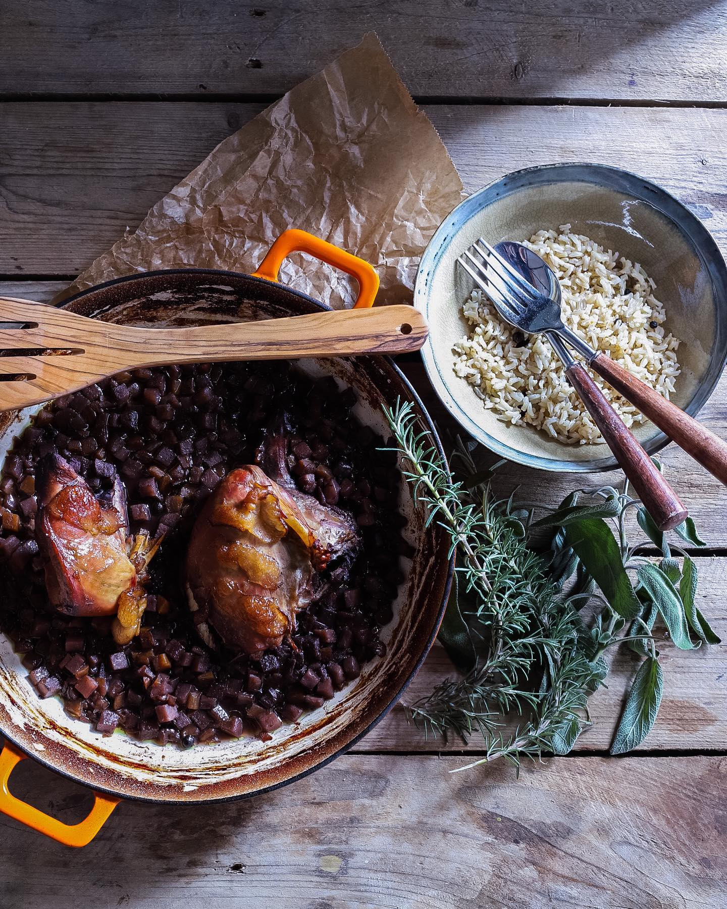

Pečený bažant podľa @mishmushcz — Normy Jedál
🇨🇿Jeje tenhle bazantik na vine tu na me krici asi tyden, ze jsem vam ho zapomnela ukazat😁stejne tak krici muj svagr, ze jsem ho tam jeste neoznacila @adamsvobi_hunting (mam od nej bazanty a vsechnu zverinu, tak te teda oznacuju😁diky svagre).
Pouzila jsem jen bazantni prsicka (chuti se nemusite bat, me to pripomina sussi kure), ta vysusenost je prave u tohohle masa problem, proto je dobre ho spikovat a obkladat slaninou, no ja vsadila na muj oblibeny klasicky bily spek🤤
Pak jen opect zprudka maso, vyndat z panve, do vypeku dat korenovou zeleninu (pouzila jsem asi 400 gr) a divoke koreni, trosku rozmarynu a a tak 3 listky salveje, orestovat, zalit dve deci cerveneho (dobreho😉), dvema deci kureciho vyvaru, vratit maso, jeste muzete navrch pridat spicek a zakryte pect pri 160 cca 2 hodinky, na poslednich 10 min muzete odkryt a nechat udelat krupinku.
Me se k tomu nejlip hodi ryze, takze do ryzovaru basmati a smes divokeho koreni, krasne to ryzi ovoni.
Mooc dobre to bylo, dalsi bazantici jsou jeste v mrazaku, tak uvidime, co s nimi bude😉
Jite zverinu, bazantiky?
🇺🇸My oven baked pheasant with red wine veggie and wild basmati rice.
#bazantnadivoko #pecenybazant #zverina #nadivoko #bazantsryzi #pheasant #wildrice #czechfoodblogger #mishmushcz